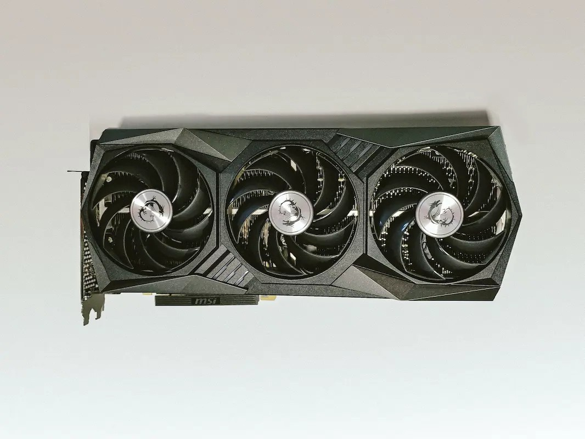

Komponenter

CPU
CPU'en er din computers "Central Processing Unit". Lidt ligesom hjernen er for dig. Når du bygger en stationær computer, vil CPU'en ofte være det første, du vælger, da den bestemmer hvilket bundkort og hvilken type RAM, du kan bruge.
I 2021 var det meget svært at skaffe gode CPU'er på grund af høj efterspørgsel og logistiske udfordringer under corona. Samtidig påvirkede kryptomining markedet kraftigt.
RAM står for "Random Access Memory" og er computerens arbejdshukommelse. Det bestemmer, hvor mange processer og mellemregninger computeren kan håndtere samtidig.

Grafikkort
GPU står for "Graphic Processing Unit". På dansk kaldes det et grafikkort. Hvis du spiller computerspil eller redigerer video, er et dedikeret grafikkort vigtigt.
Et selvstændigt grafikkort har sin egen dedikerede hukommelse og kan håndtere tunge grafiske opgaver langt bedre end en integreret løsning.
Motherboard
Bundkortet er "pladen", du sætter din CPU, din GPU og dine RAM fast i. Det er på den måde ret afgørende, at dit motherboard dvs. dit bundkort passer til resten af din hardware. Ellers bliver det en "flaskehals".

Køling
Luftkøling
Den mest almindelige måde at køle en computer på er luftkøling. Ventilatorer leder varm luft ud og køligere luft ind i kabinettet.
Moderne luftkølere kan være næsten lydløse og samtidig meget effektive.
Vandkøling
Vandkøling bruger et lukket system med væske til at transportere varme væk fra CPU'en. Det kræver pumper og slanger, men kan være både effektivt og visuelt imponerende.